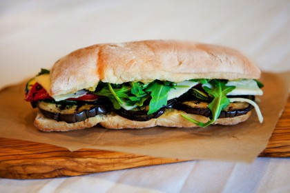

Grilled Eggplant,Tomatoes,Provolone and Pesto Sandwiches
Ingredients
- 4 Large slices eggplant
- Salt and Pepper to taste
- Extra virgin olive oil
- 2 slices baguette, 8 inches long,cut in half lengtwise
- 1/4 cup pesto
- 4 slices tomato, cut 1/2 inch thick
- 4 slices Provolone cheese ( 3 oz.)
- 2 small handful fresh arugula
Directions
- To grill or roast eggplant, slice into 1/2 inch pieces, salt lightly and let stand for 10 minutes.
- Brush with olive oil and grill or broil until brown and softened.
- Spread pesto evenly on both sides of the baguette.
- Cover one side with tomato slices and Provolone.
- Cover the other side with eggplant and top with arugula.
- Close up the sandwiches, slice in half.
- Serve with a glass of red Italian wine.